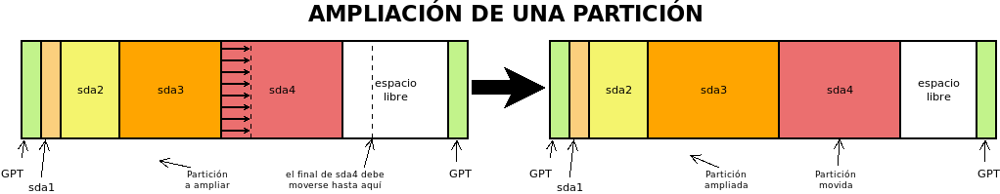
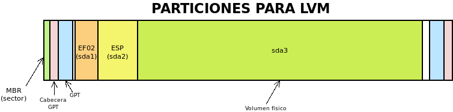

5.1.4. Volúmenes lógicos¶
A diferencia de otros como zfs o btrfs, ext4 no soporta nativamente la gestión de volúmenes lógicos. Sin embargo, podemos manejar discos y particiones virtuales, ayudándonos de un software adicional llamado LVM. Las ventajas de su uso, ya se han establecido en epígrafes anteriores:
Permite agrandar indiscriminadamente el disco: basta con comprar un nuevo disco físico e incluirlo como integrante del disco virtual.

Permite agrandar indiscriminadamente las particiones sin cuidarse de que el espacio que constituye la partición deba ser contiguo. Cuando tratamos particiones físicas, ampliar una partición es todo un engorro, sobre todo si está encajonada entre otras dos particiones. Por ejemplo, ampliar en el siguiente gráfico
sda3, implica también moversda4:
Logramos, por tanto, muchísima más versatilidad que usando particiones fisicas. En contraprestación, hay una desventaja evidente: las particiones lógicas sólo son visibles con el software de LVM.
Definiciones
Antes de pasar a exponer cómo crear y manejar volúmenes lógicos, es pertinente fijar el significado de algunos términos que se usarán en la exposición:
- Volúmen físico (PV)
Son las particiones físicas o incluso discos físicos completos sobre las que se definen los discos virtuales.
- Grupo de volúmenes (PV)
Es el conjunto de volúmenes físicos que conforma un disco virtual.
- Volúmenes lógicos (LV)
Es el dispoitivo virtual de bloques que alberga un sistemas de ficheros, esto es, lo que hemos venido definiendo como partición virtual a lo largo de nuestra exposición.
En la tarea de constituir volúmenes lógicos:
Deben definirse cuáles son los volúmenes físicos.
Deben definirse cómo se agrupan esos volúmenes físicos en grupos de volúmenes. Lo habitual es que haya un grupo de volúmenes.
Debe particionarse cada grupo de volúmenes en volúmenes logicos.
Nota
Es importante tener presente que GRUB soporta LVM y, por tanto, es capaz de arrancar un Linux aunque los ficheros de su fase 3 y el kernel se encuentren dentro de volúmenes lógicos.
Es muy probable que el software para gestionar volúmenes lógicos ya se encuentre instalado, pero si no es así:
# apt install lvm2
Nota
LVM permite también la creación de RAIDs, pero no es propósito de este apartado, tratarlo. Bajo el epígrafe dedicado a RAUDs hay todo un apartado dedicado a la creación de RAIDs con LVM.
5.1.4.1. Creación¶
Dentro del grupo de volúmenes podemos incluir todas las particiones que deseemos crear, excepto aquellas necesarias para el arranque del disco. Por tanto, un particionado físico del disco apropiado para crear volúmenes lógicos puede ser el siguiente:
que usando sgdisk puede realizarse de esta forma:
$ sgdisk -a 8 -n "0:40:2047" -t "0:0xef02" -c "0:BOOTBIOS" \
-a 2048 -n "0:2048:+100M" -t "0:0xef00" -c "0:EFI" \
-N 0 -t "3:0x8e00" -c "3:LVM" /tmp/0.disk
de forma que creamos las dos particiones necesarias para el arranque aparte, y una tercera partición destinanda a ser el volumen físico que constituya el grupo de volúmenes. La partición destinada para este fin se nota con el código 0x8E00.
Nota
Por supuesto, podemos crear volúmenes lógicos partiendo también de un particionado DOS
Como estamos particionando un fichero, no podemos acceder
directamente a sus particiones como sí sería posible si particionáramos un disco
(p.e. de /dev/sda aparecerían /dev/sda1, file:/dev/sda2,
etc.). Para hacerlas accesibles es necesario asegurarse de que está cargado el
módulo loop:
# modprobe loop
y usar losetup para asociar/desasociar el fichero a un dispositivo de bucle:
# losetup /dev/loop0 /tmp/0.disk
# losetup
NAME SIZELIMIT OFFSET AUTOCLEAR RO BACK-FILE DIO LOG-SEC
/dev/loop0 0 0 0 0 /tmp/0.disk 0 512
# losetup -d /dev/loop0
Con todo, asociar el fichero al dispositivo no provoca que aparezcan las particiones, para ello es necesario usar partx
# partx -a /dev/loop0
# ls -1 /dev/loop0*
/dev/loop0
/dev/loop0p1
/dev/loop0p2
/dev/loop0p3
# partx -d /dev/loop0
# ls -1 /dev/loop0*
/dev/loop0
Hecho el particionado y expuestas las particiones, lo primero es declarar que la tercera partición es un volumen físico[1]:
# pvcreate /dev/loop0p3
tras lo cual ya puede constituirse un grupo de volúmenes llamado «VGtest» con este volumen físico:
# vgcreate VGtest /dev/loop0p3
# vgs VGtest
VG #PV #LV #SN Attr VSize VFree
VGtest 1 0 0 wz--n- <19,95g <19,95g
Esta última acción permite empezar a crear particiones lógicas con la orden lvcreate. Por ejemplo:
# lvcreate -L 2G VGtest -n primera
# lvcreate -L 5G VGtest -n segunda
# vgs VGtest
VG #PV #LV #SN Attr VSize VFree
VGtest 1 0 0 wz--n- <19,95g <12,95g
# lvs VGtest
LV VG Attr LSize Pool Origin Data% Meta% Move Log Cpy%Sync Convert
primera VGxxx -wi-a----- 2,00g
segunda VGxxx -wi-a----- 5,00g
Estas acciones han particionado 7 de los 20GB del grupo de volúmenes y crean dos
dispostivos virtuales, /dev/VGtest/primera y
/dev/VGtest/segunda que podemos tratar como si de particiones fisicas
se tratasen. Por ejemplo, podemos dotarlas de un sistema de ficheros:
# mkfs.ext4 -L PRIMERA /dev/VGtest/primera
# mkfs.ext4 -L SEGUNDA /dev/VGtest/primera
5.1.4.2. Disponibilidad¶
Habitualmente la aparición de los volúmenes lógicos es automática al hacer disponibles los volúmenes que constituyen el grupo de volúmenes. Si no es así, pueden habilitar con la orden:
# vgchange -ay VGtest
Lo que es más útil es deshabilitar los volúmenes lógicos:
# vgchange -an VGtest
ya que es indispensable hacerlo si queremos hacer desaparecer los volúmenes físicos sobre los que se asientan. Por ejemplo, para el caso que nos ocupa, en que hacemos pruebas con un fichero, la única forma de usar partx y losetup para desasociar el fichero al dispositivo de bucle es deshabilitar los volúmenes lógicos porque de lo contrario, fallará:
# partx -d /dev/loop
al encontrar la partición /dev/loop03 ocupada.
5.1.4.3. Consulta¶
Hay tres tipos de entidades (volúmenes físicos, grupos de volúmenes y volúmenes lógicos) y dos tipos de consultas sobre ellas: la resumida y la extensa, por lo que podemos llegar a hacer seis consultas distintas. En los seis casos, puede añadirse como argumento una entidad concreta (PV, PV o LV) para recibir información exclusivamente de ella o no añadir ninguna y recibir información de todas.
Para volúmenes físicos, las órdenes son:
# pvs
PV VG Fmt Attr PSize PFree
/dev/sdc2 vgdebian lvm2 a-- <465,70g 79,39g
/dev/loop0p3 VGtest lvm2 a-- <19,95g <12,95g
# pvdisplay /dev/loop0p3
--- Physical volume ---
PV Name /dev/loop0p3
VG Name VGtest
PV Size 19,95 GiB / not usable 4,98 MiB
Allocatable yes
PE Size 4,00 MiB
Total PE 5106
Free PE 3314
Allocated PE 1792
PV UUID 36SmEX-lPxG-qFW2-iMGl-1c5T-CLlb-LqLY1
Para grupos de volúmenes:
# vgs
VG #PV #LV #SN Attr VSize VFree
VGtest 1 2 0 wz--n- <19,95g <12,95g
vgdebian 1 4 0 wz--n- <465,70g 79,39g
# vgdisplay VGtest
--- Volume group ---
VG Name VGtest
System ID
Format lvm2
Metadata Areas 1
Metadata Sequence No 3
VG Access read/write
VG Status resizable
MAX LV 0
Cur LV 2
Open LV 0
Max PV 0
Cur PV 1
Act PV 1
VG Size <19,95 GiB
PE Size 4,00 MiB
Total PE 5106
Alloc PE / Size 1792 / 7,00 GiB
Free PE / Size 3314 / <12,95 GiB
VG UUID P3dDgq-AeHA-7Vur-Jy48-fzlm-wnC1-jf0x85
Y para volúmenes lógicos:
# lvs
LV VG Attr LSize Pool Origin Data% Meta% Move Log Cpy%Sync Convert
primera VGtest -wi-a----- 2,00g
segunda VGtest -wi-a----- 5,00g
home vgdebian -wi-a----- 370,00g
lxc vgdebian -wi-a----- 2,00g
raiz vgdebian -wi-a----- <12,45g
swap vgdebian -wc-a----- <1,86g
# lvdisplay /dev/VGtest/primera
--- Logical volume ---
LV Path /dev/VGtest/primera
LV Name primera
VG Name VGtest
LV UUID KBMwih-Mctp-rOcv-W3aK-iqTG-2vXo-KlpQxs
LV Write Access read/write
LV Creation host, time choquereta, 2019-11-27 07:40:59 +0100
LV Status available
# open 0
LV Size 2,00 GiB
Current LE 512
Segments 1
Allocation inherit
Read ahead sectors auto
- currently set to 256
Block device 253:4
Ver también
El significado de los atributos indicados por lvs puede consultarse en esta página de Github.
5.1.4.4. Modificación¶
La ventaja fundamental de las volúmenes lógicos es que podemos ampliarlos a voluntad sin que el espacio tenga que ser contiguo. Por ejemplo:
# lvextend -L 3G /dev/VGtest/primera
Aumenta hasta 3GiB el primer volumen lógico, aunque no el sistema de ficheros contenido, por lo que el espacio ocupable seguirá siendo de 2GiB. Para ampliar también el sistema de fichero es necesario, en este caso:
# resize2fs /dev/Vgtest/primera
No obstante, podemos incluir la opción -r y lvextend se encargará de comprobar cuál el sistema de ficheros y aplicar el comando adecuando para que éste colonice el nuevo espacio disponible. En consecuencia las dos órdenes anteriores son equivalente a:
# lvextend -r -L 3G /dev/VGtest/primera
También puede indicarse, en vez de el nuevo tamaño, el incremento. Esta orden:
# lvextend -r -L +1G /dev/VGtest/segunda
aumenta hasta los 6GiB el volumen lógico cuyo anterior tamaño era 5GiB. Es posible también usar porcentajes en vez de tamaños o incrementos absolutos a través de la opción -l[2]:
# lvcreate -l 100%FREE VGtest -n tercera
De esta manera, la nueva partición ocupará todo el espacio libre que uqede en el grupo de volúmenes. El disco físico se ha acabado, pero si «compráramos» otro, podríamos añadirlo como volumen lógico a VGtest y volveríamos a disponer de espacio libre:
# truncate -s 10G /tmp/1.disk
# losetup /dev/loop1 /tmp/1.disk
# pvcreate /dev/loop1
# vgextend VGtest /dev/loop1
# vgs VGtest
VG #PV #LV #SN Attr VSize VFree
VGtest 2 2 0 wz--n- 29,94g 9,94g
Ahora el grupo de volúmenes tiene 30GiB, ya que hemos añadido 10GiB más.
Todas estas operaciones son de incremento y no requieren siquiera que desmontemos los sistemas de ficheros para ser llevadas a cabo. En cambio, las operaciones de reducción son más traumáticas ya que, por lo general, requieren dejar hueco y en el caso de reducir particiones lógicas, desmontar previamente el sistema de ficheros que contiene. Por lo demás, el procedimiento es semejante:
# lvresize -r -L -2G /dev/VGtest/segunda
# lvs /dev/VGtest/segunda
LV VG Attr LSize Pool Origin Data% Meta% Move Log Cpy%Sync Convert
segunda VGtest -wi-a----- 4,00g
# lvreduce -r -l -25%LV /dev/VGtest/segunda
# lvs /dev/VGtest/segunda
LV VG Attr LSize Pool Origin Data% Meta% Move Log Cpy%Sync Convert
segunda VGtest -wi-a----- 3,00g
5.1.4.5. Aprovisionamiento fino¶
El aprovisionamiento fino (thin provisioning, en inglés) consiste en reservar para un volumen lógico más espacio de disco del que realmente tiene disponible. Es un concepto muy comúnmente usando en virtualización para cuyas máquinas virtuales podemos usar discos de un tamaño mucho mayor del que realmente ocupa su fichero correspondiente. Algo parecido se logra con la orden truncate. Se contrapone al aprovisionamiento grueso, que consiste en justo lo contrario, esto es, en reservar exactamente el tamaño del volumen. Hasta ahora, hemos practicado con LVM este último tipo de aprovisionamiento.
Sin embargo, LVM soporta aprovisionamiento fino que, en principio, puede servir para dos propósitos distintos:
Ajustar el tamaño máximo de varios volúmenes lógicos a parte (o todo) del tamaño del grupo de volúmenes. Si no tenemos claro, cuáles van a ser las necesidades de crecimiento de estos volúmenes, esto puede ahorrarnos la necesidad de hacerlos excesivamente pequeños y, según sea la evolución posterior, tener después que aumentarles progresivamente el tamaño.
Si instalamos sobre un disco pequeño con intención de que el sistema acabe corriendo sobre un disco mayor, crear los volúmenes lógicos con el tamaño que tendrán en el disco final. Usaremos esto al plantear la instalación del servidor.
Lo primero, antes de empezar, es asegurarse de que está instalado el paquete thin-provisioning-tools, hecho lo cual, podemos hacer pruebas con un nuevo disco:
# truncate -s 500M 0.disk
# losetup /dev/loop0 0.disk
# vgcreate VGtest /dev/loop0
Para probar el concepto crearemos dos volúmenes lógicos: el primero normal y el segundo un «pool», esto es, un volumen en el que encerraremos los volúmenes para los que deseamos aprovisionamiento fino:
# lvcreate -L 100m -n fuera VGtest
# lvcreate --thinpool pool -l 100%FREE VGtest
# lvs VGtest
LV VG Attr LSize Pool Origin Data% Meta% Move Log Cpy%Sync Convert
fuera VGtest -wi-a----- 100,00m
pool VGtest twi-a-tz-- 388,00m 0,00 10,84
El primero es un volumen de 100MiB y, además, no podrá cambiar su tamaño a menos que agrandemos el grupo de volúmenes con, por ejemplo, otro disco. El segundo es el pool dentro del que podemos crear volúmenes lógicos con aparentemente cualquier tamaño:
# lvcreate -T -n tvol1 -V 1G VGtest/pool
# lvcreate -T -n tvol2 -V 2G VGtest/pool
# lvs VGtest
LV VG Attr LSize Pool Origin Data% Meta% Move Log Cpy%Sync Convert
fuera VGtest -wi-a----- 100,00m
pool VGtest twi-aotz-- 388,00m 0,00 11,04
tvol1 VGtest Vwi-a-tz-- 1,00g pool 0,00
tvol2 VGtest Vwi-a-tz-- 2,00g pool 0,00
Al crear ambos volúmenes, se nos refiere la opción activation/thin_pool_autoextend_threshold, porque su valor es 100:
# lvm dumpconfig activation/thin_pool_autoextend_threshold
thin_pool_autoextend_threshold=100
La variable fija el tanto por cierto de ocupación del pool para el que una vez alcanzado se incrementa el tamaño en un porcentaje fijado por:
# lvm dumpconfig activation/thin_pool_autoextend_percent
thin_pool_autoextend_percent=20
pero justamente un valor de 100% deshabilita la posibilidad. Si ponemos un valor más bajo (p.e el 85%), sí se llevará a cabo la ampliación automática… si se puede, que no es nuestro caso, ya que el grupo de volúmenes está completamente lleno.
Si probamos a dar formato a uno de los volúmenes del pool, comprobaremos el sistema de ficheros participa de la ficción del tamaño:
# mkfs.ext4 -L TVOL2 /dev/VGtest/tvol2
# mount /dev/VGtest/tvol2 /mnt/
# df -h /mnt/
S.ficheros Tamaño Usados Disp Uso% Montado en
/dev/mapper/VGtest-tvol2 2,0G 6,0M 1,8G 1% /mnt
Sin embargo, el espacio real es el que ocupa el pool:
# lvs VGtest/pool
LV VG Attr LSize Pool Origin Data% Meta% Move Log Cpy%Sync Convert
pool VGtest twi-aotz-- 388,00m 25,14 12,21
Nota
No soportan aprovisionamiento fino ni el instalador de debian, ni GRUB, lo cual dificulta
enormemente meter el sistema de ficheros raíz en un volumen de este tipo.
Lo primero impide crear o aprovechar volúmenes de aprovisionamiento fino
durante el proceso de instalación; y
lo segundo obliga a no incluir dentro de ellos el núcleo y el sistema
de ficheros inicial (initrd), lo cual se traduce en montar /boot
aparte o en copiar ambos ficheros en la partición ESP.
5.1.4.6. Instantáneas¶
Una instantánea consiste en el almacenamiento del estado del sistema de archivos en el momento de llevarla a cabo. Para ello, no se hace una copia del sistema (lo cual es costoso en tiempo y equivaldría a una copia de seguridad), sino que al modificarse por primera vez tras la creación de la instantánea el contenido de un fichero, se guarda en la instantánea una copia de éste sin la modificación. De esta forma, el estado de la instantánea es la suma de los archivos que no han llegado a ser modificados, guardados en el volumen original, más la copia de los archivos sí modificados, guardados en la instantánea.
Las instantáneas reparan las pérdidas por modificación o borrado no deseados, papel que también puede cumplir una copia de seguridad, pero a diferencia de éstas, no sirven como medida contra los fallos de disco o la corrupción de datos, ya que requieren el sistema original y pueden estar almacenadas sobre el mismo dispositivo físico.
Hay dos mecanismos para la creación de instantáneas:
Mediante el uso de sistemas de ficheros que las soporten nativamente como ZFS o BtrFS.
Mediante software adicional que se encargue de hacer las instantáneas como el software que nos ocupa en Linux o la restauración del sistema en los sistemas Windows.
Para llevar a cabo instantáneas con LVM el procedimiento es simple: basta con crear un volumen lógico que se declare que sirve para almacenar la instantánea de otro volumen lógico. Por ejemplo, vamos a dar formato a uno de los volúmenes lógicos y a escribir dentro de él:
# mkfs.ext4 -L PRIMERA /dev/VGtest/primera
# mkdir /tmp/{original,snap}
# mount /dev/VGtest/primera /tmp/original
# echo "Hola" > /tmp/original/saluto.txt
Hecho lo cual, podemos crear una instantánea del estado actual de «primera»:
# lvcreate -s -n primera_snap -L 50M /dev/VGtest/primera
donde es importante tener presente que el tamaño como máximo puede ser el tamaño del volumen original[3] (-l 100%ORIGIN). También se puede añadir un parámetro adicional para indicar sobre qué volumen físico de los que integran el grupo de volúmenes se quiere definir la instantánea. Hecho esto, podemos practicar dos estrategias:
La obvia que es continuar trabajando sobre el volumen original y, si en algún momento decidimos revertir los cambios, recuperar la instantánea. Un ejemplo en que es una buena opción esta estrategia es ante una actualización. Si sospechamos que algo puede ir mal, podemos hacer antes una instantánea y dependiendo del resultado, revertir al estado anterior a la instalación o desechar la instantánea.
Trabajar sobre la instantánea sin alterar el volumen original, ya que si recuperamos la instantánea lo que haremos será aplicar los cambios de la instantánea sobre el volumen original. Esta opción es adecuada en los casos en que queremos que el sistema siga funcionando en producción del mismo modo, mientras nosotros introducimos cambios (p.e. en algunos scripts). De nuevo, podrá darse el caso de que decidamos aplicar los cambios (recuperando la instantánea) o desecharlos (borrándola).
Trabajando sobre el propio volumen
Para nuestro ejemplo, podemos hacer algunos cambios simples:
# echo "Adios" >> /tmp/original/saludo.txt
# cp /etc/resolv.conf /tmp/original
Con estas acciones la instantánea debería ir paulatimente incrementando su ocupación (ya que necesita almacenar las copias de los ficheros) y es conveniente vigilar este dato, ya que malograremos la instantánea, si superamos la capacidad máxima:
# lvs -o data_percent /dev/VGtest/primera_snap
Data%
0.09
Nota
Si comprobamos que la ocupación se aproxima al 100%, podemos usar lvextend como se hace en los volúmenes lógicos normales.
Dependiendo de si los cambios sobre el volumen son aceptables o no, tocará desechar la instantánea:
# lvremove /dev/VGtest/primera_snap
o revertir los cambios sobre el volumen:
# umount /tmp/original
# lvconvert --merge /dev/VGtest/primera_snap
cuyo efecto será que el volumen vuelta al estado de la instantánea y que el volumen con la instantánea desaparezca automáticamente.
Advertencia
Es importante que tanto el volumen original como el de la instantánea se encuentren desmontados en el momento de hacer la fusión.
Trabajando sobre la instantánea
Alternativamente, podemos trabajar sobre la instantánea y dejar sin alterar el volumen original. Para ello, basta con montar la instantánea:
# mount /dev/VGtest/primera_snap /tmp/snap
y realizar los cambios sobre ella:
# echo "Adios" >> /tmp/snap/saludo.txt
# cp /etc/resolv.conf /tmp/snap
En este caso, las operaciones para desechar o revertir los cambios son justamente las opuestas. Si deseamos aplicar los cambios sobre el volumen, necesitamos fusionar con la instantánea:
# umount /tmp/{original,snap}
# lvconvert --merge /dev/VGtest/primera_snap
y, si deseamos desecharlos, eliminar el volumen de la instantánea:
# umount /tmp/snap
# lvremove /dev/VGtest/primera_snap
Obsérvese que si nuestra intención fuera tener varias instantáneas de un mismo volumen lógico, entonces tendríamos que crear un volumen de instantánea para cada una de ellos, lo que resultaría en la reserva (y malgasto) de una ingente cantidad de espacio en el grupo de volúmenes. La solución es utilizar el aprovisionamiento fino para almacenar los volúmenes de instantánea.
Instantáneas con aprovisionamiento fino
Dado que el aprovisionamiento fino permite crear múltiples volúmenes lógicos sin que realmente exista el espacio ocupado por todos ellos, es muy útil combinarlo con las capacidades de instantánea de LVM para tener un sistema de archivos con varios puntos de restauración.
Puede utilizarse una volumen lógico fuera del «pool» como volumen original (véase esta documentación de RedHat), pero dado que este volumen original debe quedar como de sólo lectura y desactivo, planteemos que el volumen original está dentro del propio «pool». Para ilustrarlo partamos del siguiente disco ficticio al que definimos un grupo de volúmenes:
# truncate -s 1G 0.disk
# losetup /dev/loop0 0.disk
# vgcreate VGtest /dev/loop0
y un «pool» para albergar un volumen y sus instantáneas:
# lvcreate --thinpool pool -L 500M VGtest
y el propio volumen:
# lvcreate -T -n original -V 350M VGtest/pool
# mkfs.ext4 -L ORIGINAL /dev/VGtest/original
# mount /dev/VGtest/original /mnt
A partir de este momento podemos ir generando instantáneas que almacenen distintos estados del sistema de archivos. Por ejemplo, si inmediatamente generamos una instantánea, tendremos el estado en el que el sistema estaba vacío:
# lvcreate -s -n 0snap VGtest/original
Podemos crear, borrar y modificar archivos:
# echo "Primer archivo" > /mnt/uno.txt
y estos cambios se aplicarán a la partición original, ya que es esta la que se encuentra activa:
# lvs VGtest
LV VG Attr LSize Pool Origin Data% Meta% Move Log Cpy%Sync Convert
0snap VGtest Vwi---tz-k 352,00m pool original
original VGtest Vwi-aotz-- 352,00m pool 7,79
pool VGtest twi-aotz-- 500,00m 5,57 11,72
En un estado posterior, podremos generar una nueva instantánea, que fijará estos cambios:
# lvcreate -s -n 1snap VGtest/original
Todas las instantáneas que generemos de este modo están inactivas (no aparece
la a entre sus atributos) y, además, no se activarán aunque así lo
ordenemos (atributo k). Si nuestra intención fuera recuperar algún
archivo de ellas deberíamos corregir esto, hacer las operaciones pertinentes y
volver a dejar todo como estaba. Por ejemplo, si por error perdemos uno.txt:
# rm -f /mnt/uno.txt
aún podremos recuperarlo de la instantánea «1snap», para lo cual deberemos hacer:
# lvchange -kn -ay -pr VGtest/1snap
que permite la activación (-k n), activa el volumen (-a y) y, por precaución, hace el volumen de sólo lectura (-p r). Hecho esto, podemos montar el volumen sobre otro punto:
# mount /dev/VGtest/1snap /tmp/mnt
recuperar el archivo perdido:
# cp /tmp/mnt/uno.txt /mnt
y dejar todo como estaba en un principio:
# umount /tmp/mnt
# lvchange -an -ky -prw Vgtest/1snap
Hay, no obstante, un modo más cómodo de gestionar todo esto, que veremos justamente a continuación:
snapper
snapper es un programita de la línea de comandos que nos permite hacer y mantener instantáneas de una manera bastante cómoda. Además, gestiona tanto instantáneas basadas en aprovisionamiento fino de LVM como basadas en BtrFS, lo cual permite usar una misma interfaz de usuario para ambos tipos de instantáneas[4].
Partamos del supuesto anterior:
# truncate -s 1G 0.disk
# losetup /dev/loop0 0.disk
# vgcreate VGtest /dev/loop0
# lvcreate --thinpool pool -L 500M VGtest
# lvcreate -T -n original -V 350M VGtest/pool
# mkfs.ext4 -L ORIGINAL /dev/VGtest/original
# mount /dev/VGtest/original /mnt
en que ya hemos preparado el volumen lógico con un sistema de archivos y lo
hemos montado. A partir de este momento, podemos centrarnos en que el sistema de
archivos está montado sobre /mnt y usar snapper olvidádonos
de los comandos propios de LVM. Lo primero es crear una configuración asociada
al punto de montaje que nos sirva para generar las instantáneas:
# snapper -c misnap create-config -f "lvm(ext4)" /mnt
Nota
Si utilizáramos snapper para gestionar las instantáneas de un sistema de archivos BtrFS, la única diferencia sería la declaración del sistema (-f «btrfs»), todo lo demás sería idéntico y las órdenes a partir de ésta las mismas.
Creada la configuración con nombre «misnap», podemos consultar las instantáneas que en este punto hay creadas:
# snapper -c misnap list
# | Tipo | Pre número | Fecha | Usuario | Limpieza | Descripción | Información del usuario
---+--------+------------+-------+---------+----------+-------------+------------------------
0 | single | | | root | | current |
Ahora mismo sólo hay un estado del sistema de archivos montado sobre
/mnt, el 0, lo cual es normal, porque aún no hemos creado ninguna
instantánea. Esta instantánea 0 siempre representará el estado en
funcionamiento, este es, siempre será el estado sobre el que se reflejen los
cambios cuando hagamos operaciones sobre el sistema de archivos.
Aunque podemos olvidarnos de qué es lo que ocurre por debajo (o sea, cómo se comporta LVM) e incluso desconocerlo, podemos echarle un ojo, visto que acabamos aprender cómo gestionar las instantáneas directamente:
# lvm vgtest
lv vg attr lsize pool origin data% meta% move log cpy%sync convert
original vgtest vwi-aotz-- 352,00m pool 5,68
pool vgtest twi-aotz-- 500,00m 4,06 11,43
Como es natural, al no haberse generado ninguna instantánea, no se ha creado ningún volumen nuevo. Generemos una primera instantáne que refleje el estado inicial del sistema de archivos (completamente vacío):
# snapper -c misnap create --description "Estado inicial"
lo cual debe provocar la aparición de una primera instantánea:
# snapper -c misnap list
# | Tipo | Pre número | Fecha | Usuario | Limpieza | Descripción | Información del usuario
---+--------+------------+--------------------------+---------+----------+----------------+------------------------
0 | single | | | root | | current |
1 | single | | vie 15 oct 2021 17:20:11 | root | | Estado inicial |
representada por el identificador 1. Internamente, es obvio que ha surgido un nuevo volumen de aprovisionamiento fino:
# lvm vgtest
lv vg attr lsize pool origin data% meta% move log cpy%sync convert
original vgtest vwi-aotz-- 352,00m pool 5,68
original-snapshot1 vgtest vri---tz-k 352,00m pool original
pool vgtest twi-aotz-- 500,00m 4,06 11,43
y el comportamiento es idéntico al que se producía cuando operábamos directamente con LVM. Operemos un cambio sobre el sistema de archivos:
# echo "1" > /mnt/uno.txt
La ventaja de usar snapper es que es mucho más cómodo ver y recuperar estados antiguos. Por ejemplo, para comprobar qué diferencia hay entre el estado actual (el 0) y el inicial (el 1):
# snapper -c misnap status 1..0
+..... /mnt/uno.txt
O sea, 0 ha añadido (»+») el archivo indicado al estado representado con 1. Lo contrario (ha perdido un archivo), se representa con «-» y el cambio en el contenido de un archivo con una «c». Si queremos guardar este nuevo estado:
# snapper -c misnap create --description "Estado 1º"
# snapper -c misnap list
# | Tipo | Pre número | Fecha | Usuario | Limpieza | Descripción | Información del usuario
---+--------+------------+--------------------------+---------+----------+----------------+------------------------
0 | single | | | root | | current |
1 | single | | vie 15 oct 2021 17:20:11 | root | | Estado inicial |
2 | single | | vie 15 oct 2021 17:34:31 | root | | Estado 1º |
Supongamos ahora que cometemos un desliz y cambias equivocadamente el contenido del archivo:
# echo "" > /mnt/uno.txt
# snapper -c misnap status 2..0
c..... /mnt/uno.txt
# snapper -c misnap status 1..2
+..... /mnt/uno.txt
Podemos comprobar cuál es el cambio muy fácilmente:
# snapper -c misnap diff 2..0 /mnt/uno.txt
--- /mnt/.snapshots/2/snapshot/uno.txt 2021-10-15 17:27:26.000000000 +0200
+++ /mnt/uno.txt 2021-10-15 17:37:07.000000000 +0200
@@ -1 +1 @@
-1
+
que muestra la diferencia haciendo uso de la orden diff. Si hubiéramos prescindido del archivo concreto, la orden diff se hubiera ejecutado para cada uno de los archivos distintos entre ambos estados. También podemos recuperar una versión antigua del archivo en el estado actual:
# snapper -c misnap undochange 2..0 /mnt/uno.txt
crear:0 modificar:1 eliminar:0
# cat /mnt/uno.txt
1
que devolverá el archivo al estado que tenía cuando se hizo la instantánea 2. También pueden eliminarse instantáneas con la suborden delete:
# snapper -c misnap delete 2
Las instantáneas generadas con snapper no se limitan a esto. La configuración creada inicialmente determina su comportamiento:
# snapper -c misnap get-config
Clave | Valor
-----------------------+----------
ALLOW_GROUPS |
ALLOW_USERS |
BACKGROUND_COMPARISON | yes
EMPTY_PRE_POST_CLEANUP | yes
EMPTY_PRE_POST_MIN_AGE | 1800
FREE_LIMIT | 0.2
FSTYPE | lvm(ext4)
NUMBER_CLEANUP | yes
NUMBER_LIMIT | 50
NUMBER_LIMIT_IMPORTANT | 10
NUMBER_MIN_AGE | 1800
QGROUP |
SPACE_LIMIT | 0.5
SUBVOLUME | /mnt
SYNC_ACL | no
TIMELINE_CLEANUP | yes
TIMELINE_CREATE | yes
TIMELINE_LIMIT_DAILY | 10
TIMELINE_LIMIT_HOURLY | 10
TIMELINE_LIMIT_MONTHLY | 10
TIMELINE_LIMIT_WEEKLY | 0
TIMELINE_LIMIT_YEARLY | 10
TIMELINE_MIN_AGE | 1800
El significado de estas variables puede consultar en la página del manual snapper-configs. Por ejemplo, la generación automática de instantáneas está habilitada por defecto y un algoritmo (cleanup) que determina qué instantáneas periódicas conservar. De hecho, como nos hemos demorado un poco al escribir este epígrafe, al programa le ha dado tiempo ha hacer una instantánea automática:
# snapper -c misnap list
# | Tipo | Pre número | Fecha | Usuario | Limpieza | Descripción | Información del usuario
---+--------+------------+--------------------------+---------+----------+----------------+------------------------
0 | single | | | root | | current |
1 | single | | vie 15 oct 2021 17:20:11 | root | | Estado inicial |
2 | single | | vie 15 oct 2021 17:34:31 | root | | Estado 1º |
3 | single | | vie 15 oct 2021 18:00:32 | root | timeline | timeline |
Obsérvese que hay instantáneas generadas manualmente y otras generadas automáticamente; y en las variables de configuración éstas refieren las limitaciones en el número de unas y otras. Al generar una instantánea manualmente se pueden marcar como importante del siguiente modo:
# snapper -c misnap create -d "Estado 3º" -u "important=yes"
lo cual hace que el algoritmo de limpieza de las instantáneas manuales las trate de un modo especial. En cualquier caso, si se quiere gestionar las instantáneas de forma totalmente manual, basta con cambiar la configuración:
# snapper -c misnap set-config "TIMELINE_CREATE=no" "NUMBER_CLEANUP=no"
y se deshabilitará la creación de instantáneas automáticas y la limpieza de instantáneas antiguas (de lo que tendremos que encargarnos nosotros usando la suborden delete).
Notas al pie